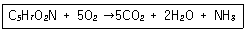
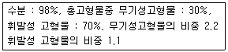
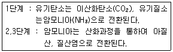
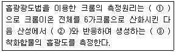
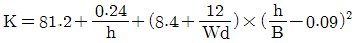
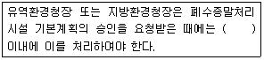

수질환경산업기사 (2005-05-29 기출문제)
1과목: 수질오염개론
1. 물의 동점성계수란?
- 전단력 τ를 점성계수 μ로 나눈 값이다.
- 전단력 τ를 밀도 ρ로 나눈 값이다.
- 점성계수 μ를 전단력 τ로 나눈 값이다.
- 점성계수 μ를 밀도 ρ로 나눈 값이다.
(정답률: 알수없음)

2. 염소소독시 pH가 높을 때 가장 잘 일어나는 반응은?
- HOCl → H+ + OCl-
- Cl2 + H2O → HOCl + HCl
- H+ + OCl- → HOCl
- HOCl + HCl → Cl2 + H2O
(정답률: 알수없음)
3. OH-농도가 0.001 mole/L 일 때 pH 는 얼마인가?
- 10.4
- 10.8
- 11.0
- 11.6
(정답률: 알수없음)
4. 미생물 세포를 C5H7O2N 이라고 하면 세포 5㎏당의 이론적인 공기소모량은? (단, 공기중 산소는 23%(W/W)로 가정한다.)

- 약 23 ㎏ air
- 약 27 ㎏ air
- 약 31 ㎏ air
- 약 42 ㎏ air
(정답률: 알수없음)
5. 다음중 박테리아와 조류의 경험적 화학 분자식으로 가장 적절한 것은?
- C5H7O2N, C5H8O2N
- C5H8O2N, C7H12O3N
- C5H7O2N, C7H14O3N
- C5H8O2N, C10H17O6N
(정답률: 알수없음)
6. 해수의 특징에 관한 설명중 틀린 것은?
- 해수의 [칼슘/마그네슘]비는 3 - 4 정도로 담수에 비하여 높다.
- 해수의 화학적 성분중 염소이온의 농도가 가장 높다.
- 해수의 주요성분 농도비는 항상 일정하다.
- 해수의 pH 는 8.2 정도이며 밀도는 수심이 깊을수록 증가한다.
(정답률: 알수없음)
7. 지하수수질의 수직분포에 관한 내용으로 틀린 것은?
- 산화, 환원 전위는 상층수에서 높고 하층수에서 낮다.
- 알칼리도는 상층수에서 크고 하층수에서 작다.
- 염분은 상층수에서 작고 하층수에서 크다.
- 유리탄산은 상층수에서 크고 하층수에서 작다.
(정답률: 알수없음)
8. Ca++농도가 200㎎/L일 때 이것은 몇 meq/L가 되는가? (단, Ca원자량 = 40)
- 5
- 10
- 25
- 100
(정답률: 알수없음)
9. 탄소동화작용을 하지 않고 유기물질을 섭취하는 식물로 폐수내의 질소와 용존산소가 부족한 경우에도 잘 성장하며 pH가 낮은 경우에도 잘자라 산성폐수의 처리에도 이용되는 미생물은?
- Algae
- Bacteria
- Rotifer
- Fungi
(정답률: 알수없음)
10. 암모니아성 질소 42㎎/L와 아질산성 질소 14㎎/L가 포함된 폐수를 완전 질산화 시키기 위한 산소요구량은?
- 135 ㎎O2 /L
- 174 ㎎O2 /L
- 208 ㎎O2 /L
- 232 ㎎O2 /L
(정답률: 알수없음)
11. K1 (탈산소계수, base = 상용대수)가 0.1/day 인 어느물질의 BOD5 = 400㎎/L이고, COD = 700㎎/L라면 NBDCOD는?
- 115㎎/L
- 135㎎/L
- 155㎎/L
- 175㎎/L
(정답률: 알수없음)
12. 하천 상류에서 BODu = 10㎎/L일 때 2m/min 속도로 유하한 20㎞ 하류에서의 BOD는? (단, K1(탈산소 계수, base=상용대수) = 0.1/day이고 유하도중에 재폭기나 다른 오염물질 유입은 없다.)
- 2㎎/L
- 3㎎/L
- 4㎎/L
- 5㎎/L
(정답률: 알수없음)
13. 만성중독 증상으로 카네미유증이 대표적이며 간장장해, 피부장해, 전신권태, 수족저림, 발암등이 알려져 있는 수질오염물질로 가장 적절한 것은?
- PCB
- 트리할로메탄
- 페놀류
- 망간
(정답률: 알수없음)
14. 친수성 콜로이드에 관한 설명으로 틀린 것은?
- 표면장력이 용매보다 약하다.
- 틴달효과가 약하거나 거의 없다.
- 재생이 쉽게 된다.
- 염에 매우 민감하다.
(정답률: 알수없음)
15. 현재의 BOD가 1㎎/L 이고 유량이 100,000m3/day인 하천 주변에 양돈단지를 조성하고자 한다. 하천의 환경기준이 BOD 5㎎/L이하인 하천에서 환경기준치 이하로 유지시키기 위한 최대사육돼지의 마리수는? (단, 돼지 사육으로 인한 하천의 유량증가는 무시하고 돼지 1마리당 BOD배출량은 0.2㎏/day로 본다.)
- 1,000마리
- 1,500마리
- 2,000마리
- 2,500마리
(정답률: 알수없음)
16. 30,000m3/day 상수를 살균하기 위하여 15kg/day의 염소가 사용되고 있는데 15분 접촉 후 잔류염소는 0.2mg/L이다. 염소 요구량(농도)은?
- 0.3mg/L
- 0.4mg/L
- 0.5mg/L
- 0.7mg/L
(정답률: 알수없음)
17. 혐기성조건하에서 200g의 glucose(C6H12O6)로부터 발생 가능한 CH4가스의 용적은? (단, 표준상태 기준)
- 46.7L
- 57.3L
- 74.7L
- 84.0L
(정답률: 알수없음)
18. 이상적인 플러그 흐름상태를 나타내는 반응조의 '분산수'로 가장 알맞는 것은?
- 무한대일 때
- 0 일 때
- 1 일 때
- -1 일 때
(정답률: 28%)
19. 수질모델링 주요절차중 수질관련 반응계수, 수리학적 입력 계수등의 입력자료의 변화정도가 수질항목 농도에 미치는 영향을 파악하는 것은?
- 보정
- 검증
- 감응도 분석
- 보전성 분석
(정답률: 알수없음)
20. 어느 1차반응에서 반응개시의 농도가 220mg/L이고 반응 1시간후의 농도는 94mg/L이었다면 반응 2시간후의 반응 물질의 농도는?
- 60mg/L
- 50mg/L
- 40mg/L
- 30mg/L
(정답률: 알수없음)
2과목: 수질오염방지기술
21. 제지공장의 BOD배출 원단위가 3kg/원료-톤이다. 동일업종 공장에서 원료 40톤/일을 처리 하는 경우에 폐수량이 400m3/일이면 폐수중의 BOD농도는 몇 mg/L인가?
- 200 mg/L
- 300 mg/L
- 400 mg/L
- 600 mg/L
(정답률: 알수없음)
22. 1일 2270m3를 처리하는 1차 처리시설에서 생 슬러지를 분석한 결과 다음과 같은 자료를 얻었다. 이 슬러지의 비중은?

- 1.014
- 1.011
- 1.009
- 1.0⑤
(정답률: 알수없음)
23. 원추형 바닥을 가진 원형의 일차침전지의 직경이 40m, 측벽 깊이가 3m, 원추형바닥의 깊이가 1m인 경우, 하수의 체류시간은? (단, 이 침전지의 처리유량은 9100m3/day 이다. )
- 약 11.1 시간
- 약 8.5 시간
- 약 5.5 시간
- 약 4.2 시간
(정답률: 알수없음)
24. 2000m3/day의 하수를 처리하는 처리장이 있다. 침전지의 깊이가 3m, 폭이 4m, 길이 16m인 침전지의 이론적인 하수 체류 시간은?
- 0.096 시간
- 0.150 시간
- 2.304 시간
- 10.417 시간
(정답률: 알수없음)
25. MLSS농도가 2000mg/L인 혼합액을 1000mL 매스실린더에 취해 30분간 정치한 후의 침강슬러지가 차지하는 용적이 300mL이었다면 이 슬러지의 SDI는?
- 0.45
- 0.57
- 0.67
- 0.73
(정답률: 알수없음)
26. 활성 슬러지공법으로 운전되고 있는 어떤 하수처리장으로 부터 매일 2000kg(건조고형물기준)의 슬러지가 배출되고 있다. 이 슬러지를 중력 농축시켜 함수율을 97%로 한 뒤 호기성 소화방식으로 처리하고자 한다. 농축된 슬러지의 비중이 1.03이라 할 때 소화조의 수리학적 체류시간을 15day로 하면 소화조의 용적은?
- 663.5m3
- 731.6m3
- 847.6m3
- 970.8m3
(정답률: 알수없음)
27. 고형물 농도 15g/L인 슬러지를 하루 480m3비율로 농축 처리하기 위해서는 연속식 슬러지 농축조의 면적은? (단, 농축조의 고형물 부하는 2kg/m2·hr로 한다.)
- 100m2
- 150m2
- 200m2
- 250m2
(정답률: 알수없음)
28. 슬러지의 함수율이 95%에서 70%로 줄어들면 전체 슬러지의 부피는?
- 1/9 감소한다.
- 1/6 감소한다.
- 1/5 감소한다.
- 1/3 감소한다.
(정답률: 알수없음)
29. 염소살균에 관한 설명으로 알맞지 않는 것은?
- 살균강도는 HOCl이 OCl- 보다 약 80배이상 강하다.
- 염소의 살균력은 낮은 pH에서 강하다.
- 염소의 살균력은 반응시간이 길며, 주입농도가 높을수록 강하다.
- 염소의 살균력은 낮은 온도에서 강하다.
(정답률: 알수없음)
30. BOD가 1875mg/L, SS가 15mg/L, 질소분 5mg/L, 인(P)분 55 mg/L인 폐수를 활성슬러지법으로 원활히 처리하기 위해 공급해야 하는 요소의 량(mg/L)은? (단, 요소: CO(NH2)2 , BOD:N:P=100:5:1 )
- 2⑤
- 190
- 162
- 123
(정답률: 알수없음)
31. Zeolite로 중금속을 제거코자 한다. 제거탑의 직경 2m, 폐수의 통과량은 200m3/hr 이다. 선속도(LV)는?
- 약 150m3/h-m2
- 약 120m3/h-m2
- 약 96m3/h-m2
- 약 64m3/h-m2
(정답률: 알수없음)
32. 가압부상조 설계에 있어서 유량이 2000m3/day인 폐수 내에 SS의 농도가 500mg/L이다. 공기의 용해도는 18.7mL/L이라고 할 때 실제 전달 압력이 4기압인 부상조 가압탱크가 있다. 이 때 A(공기질량)/S(고형물질량)의 비는? (단, 용존공기의 분율은 0.75이며 반송은 고려하지 않음)
- 0.0972
- 0.0431
- 0.0243
- 0.0117
(정답률: 알수없음)
33. 생물학적 인(P) 제거공법인 A2/O공법에 관한 설명으로 알맞지 않은 것은?
- 혐기성조, 무산소조, 호기성조로 구성되어 있다.
- 호기성조에서 인의 과잉흡수가 일어난다.
- 무산소조에서 질산화가 주로 일어난다.
- A/O공법에 비하여 탈질성능이 우수하다.
(정답률: 알수없음)
34. 폐수의 고도처리에 관한 기술 중 잘못된 것은?
- Phostrip프로세스는 폐수 중 인성분을 생물학적, 화학적 원리를 함께 이용하여 제거하는 방법이다.
- 고도처리법은 재래식 2차처리에서 완전히 제거되기 어려운 성분을 다시 제거하는 방법이다.
- 모래여과법은 고도처리에서 흡착법이나 투석법의 전처리로서 중요하다.
- 폐수중의 질소화합물은 철염에 의한 응집침전으로 대부분 제거된다.
(정답률: 알수없음)
35. 다음의 조건하에서 2mol의 글리신(glycine: CH2(NH2)COOH)의 이론적산소요구량은?

- 56g O2/ 2mol glycine
- 112g O2/ 2mol glycine
- 224g O2/ 2mol glycine
- 168g O2/ 2mol glycine
(정답률: 알수없음)
36. 처리유량이 100m3/hr이고, 염소요구량이 9.5㎎/L, 잔류 염소농도가 0.5㎎/L일 때 하루에 주입되는 염소의 양(㎏/day)은?
- 22
- 23
- 24
- 27
(정답률: 알수없음)
37. 염소소독에 관한 설명으로 틀린 것은?
- 바이러스 사멸효과가 매우 좋다.
- 처리수의 총용존고형물이 증가한다.
- 하수의 염화물 함유량이 증가한다.
- 암모니아의 첨가에 의해 결합 잔류염소가 형성된다.
(정답률: 알수없음)
38. 정수처리를 위하여 막여과시설을 설치하였다. 막모듈의 파울링에 해당되는 내용은?
- 농축으로 난용해성 물질이 용해도를 초과하여 막 면에 석출된 층
- 건조되거나 수축으로 인한 막 구조의 비가역적인 변화
- 산화제에 의하여 막 재질의 특성변화나 분해
- 원수 중의 고형물이나 진동에 의한 막 면의 상처나 마모, 파단
(정답률: 알수없음)
39. 회전원판법(Rotating Biological Contactors)에 관한 설명으로 틀린 것은?
- 슬러지생산은 살수여상 공정에서의 관측수율과 비슷하다.
- 재순환이 필요없어 모델링이 간단하다.
- 미생물에 대한 산소공급 소요전력이 작다.
- 메디아는 전형적으로 40%가 물에 잠긴다.
(정답률: 알수없음)
40. 연속회분식 반응조(Sequencing Batch Reactor:SBR)의 일반적인 공정순서가 알맞게 연결된 것은?
- 주입(fill)栓반응(react)栓침전(settle)栓제거(draw)栓휴지(idle)
- 주입(fill)栓반응(react)栓침전(settle)栓휴지(idle)栓제거(draw)
- 주입(fill)栓반응(react)栓휴지(idle)栓침전(settle)栓제거(draw)
- 주입(fill)栓반응(react)栓제거(draw)栓휴지(idle)栓침전(settle)
(정답률: 알수없음)
3과목: 수질오염공정시험방법
41. 각 시험항목의 제반시험 조작은 따로 규정이 없는한 다음 어떤 온도에서 실시하는가?
- 상온
- 실온
- 표준온도
- 항온
(정답률: 알수없음)
42. 0.025N-KMnO4 2L를 만들려고 한다. KMnO4는 몇 g이 필요한가 ? (단, 원자량은 K=39, Mn=55, O=16이다.)
- 1.6
- 2.4
- 3.2
- 3.8
(정답률: 알수없음)
43. 휘발성 저급 염소화 탄산수소류를 가스크로마토그래피법으로 분석하는 방법에 관한 설명 중 잘못된 것은?
- 시료 도입부 온도는 250-350℃, 컬럼온도는 150-250℃, 검출기온도는 350-400℃이다.
- 시료는 인산(1+10) 또는 황산(1+5)을 1방울/10㎖로 가하여 4℃ 냉암소에 보존 한다.
- 마이크로실린지는 1-10μℓ용량의 액체용이어야 한다.
- 운반가스는 99.999v/v% 이상의 질소를 사용한다.
(정답률: 알수없음)
44. 원자흡광 분석용 광원으로 일반적으로 사용되는 것은?
- 열음극램프
- 중공음극램프
- 중수소램프
- 텅스텐램프
(정답률: 알수없음)
45. 가스크로마토 그래프 분석에 사용되는 검출기중 니트로 화합물, 유기금속 화합물, 유기할로겐 화합물을 선택적으로 검출하는데 가장 알맞는 것은?
- 열전도도검출기
- 전자포획형검출기
- 염광광도형검출기
- 알칼리열이온화검출기
(정답률: 알수없음)
46. 수질오염공정시험방법 중 중금속에 대한 흡광광도 분석법에서 다음 중 그 측정 파장이 가장 큰 것은?
- 크롬
- 비소
- 페놀류
- 인산염인
(정답률: 알수없음)
47. 흡광광도법에 의한 음이온 계면활성제 측정시 메틸렌블루 우와 반응시켜 생성된 청색의 복합체를 추출하여 측정해야 한다. 이때 사용되는 추출용매로 가장 적절한 것은?
- 디티존사염화탄소
- 클로로포름
- 트리클로로에틸렌
- 노말헥산
(정답률: 알수없음)
48. 채취된 시료를 규정된 보존방법에 따라 조치했다면 최대 보존기간이 가장 짧은 측정항목은?
- 염소이온
- 노말헥산추출물질
- 화학적 산소요구량
- 색도
(정답률: 알수없음)
49. ( )안에 알맞는 내용은 것은? (순서대로 ① - ② - ③)

- 과망간산칼륨 - 디에틸디티오카바민산 - 자색
- 과망간산칼륨 - 디페닐카르바지드 - 적자색
- 중크롬산칼륨 - 디에틸디티오카바민산 - 자색
- 중크롬산칼륨 - 디페닐카르바지드 - 적자색
(정답률: 알수없음)
50. 수질오염공정시험방법에서 색도를 측정할 때의 설명이 잘못된 것은?
- 아담스 - 니컬슨의 색도공식에 의거한다.
- 백금 - 코발트 표준물질과 아주 다른 색상의 폐.하수에는 적용이 어렵다.
- 투과율법으로 색도측정을 한다.
- 시료중 부유물질은 제거하여야 한다.
(정답률: 알수없음)
51. 배수의 불소함유량의 란탄-알쟈린콤푸렉숀 흡광광도법에 의한 검정에 관한 설명으로서 옳은 것은?
- 염소이온이 다량 포함한 시료에는 아황산나트륨을 가하여 제거한다.
- 알루미늄, 철의 방해가 크나 증류하면 영향이 없다.
- 유효측정농도는 0.⑤mg/L 이상으로 한다.
- 증류온도는 100±5℃로 한다.
(정답률: 알수없음)
52. 웨어(weir)의 수두가 0.2m, 수로의 폭이 0.5m, 수로의 밑면에서 절단 하부점 까지의 높이가 0.8m인 직각 삼각 웨어의 유량은? (단,유량계수

)- 약 60m3/hr
- 약 70m3/hr
- 약 80m3/hr
- 약 90m3/hr
(정답률: 알수없음)
53. 개수로에 의한 유량 측정시 케이지(chezy)의 유속공식이 적용된다. 경심이 0.653m, 홈 바닥의 구배 i=1/1500, 유속계수가 62.5 일 때 평균 유속은?
- 약 1.31m/sec
- 약 1.44m/sec
- 약 1.54m/sec
- 약 1.62m/sec
(정답률: 알수없음)
54. 다음은 시안의 흡광광도법(피리딘-피라졸른법)측정시 시료 전처리에 관한 설명과 가장 거리가 먼 것은?
- 다량의 유지류가 함유된 시료는 초산 또는 수산화나트륨용액으로 pH 6∼7로 조절한 후 노말헥산 또는 클로로 포름으로 수층을 분리하여 시료를 취한다.
- 잔류염소가 함유된 시료는 L-아스코르빈산 또는 아비산 나트륨용액을 넣는다.
- 황화합물이 함유된 시료는 초산아연 용액을 넣어 제거한다.
- 산화성물질이 함유된 시료는 아황산나트륨용액을 대응량 만큼 넣어 영향을 제거한다. 국가기술자격검정필기시험문제
(정답률: 알수없음)
55. 피토우관의 압력두 차이는 5.1 cm이다. 지시계 유체인 수은의 비중이 13.55일 때 물의 유속은?
- 3.68 m/sec
- 4.12 m/sec
- 5.72 m/sec
- 6.86 m/sec
(정답률: 알수없음)
56. 자동시료채취기로 시료를 채취할 경우에 몇 시간이내에 30분이상 간격으로 2회이상 채취하여 일정량을 단일시료로 하는가? (단, 복수시료채취방법 )
- 6
- 8
- 12
- 24
(정답률: 알수없음)
57. 다음은 채취시료의 보존시 보존방법에 관한 기술이다. 틀린 것은?
- 시안, 구리, 카드뮴 등 금속검정용 시료는 질산을 가하여 pH를 2 이하가 되도록 조절한다.
- 유기인 검정용 시료는 염산을 가하여 pH가 5∼9 가 되도록 조절한다.
- 총질소 검정용 시료는 황산을 가하여 pH가 2 이하가되도록 조절한다.
- 노말헥산추출물질 검정용 시료는 황산을 가하여 pH가 2 이하가 되도록 조절한다.
(정답률: 알수없음)
58. 시료의 전처리에서 유기물 등을 많이 함유하고 있는 대부분의 시료에 적용하는 전처리방법은?
- 질산에 의한 분해법
- 질산-염산에 의한 분해법
- 질산-황산에 의한 분해법
- 질산-과염소산에 의한 분해법
(정답률: 알수없음)
59. 어떤 하수의 BOD를 측정하기 위하여 300mL BOD병에 하수를 15mL 주입하고 여기에 희석수를 가하여 BOD 실험을 수행하였다. 희석시료의 초기 DO농도는 7.5mg/L, 20綽에서 5일 동안 배양한 후의 DO농도는 2.4mg/L였다. 이 하수의 최종 BOD는?
- 약 50㎎/L
- 약 100㎎/L
- 약 150㎎/L
- 약 200㎎/L
(정답률: 알수없음)
60. 막여과 시험방법에서 여과막을 엠-에프씨 배지에 배양 시킬 때 분원성 대장균군 집락의 색은?
- 여러가지 색조를 띠는 파란색
- 여러가지 색조를 띠는 회색
- 여러가지 색조를 띠는 크림색
- 여러가지 색조를 띠는 붉은색
(정답률: 알수없음)
4과목: 수질환경관계법규
61. 폐수처리업에 종사하는 기술요원을 교육하는 기관으로 적절한 곳은?
- 환경공무원교육원
- 환경보전협회
- 국립환경연구원
- 환경관리공단
(정답률: 알수없음)
62. 폐수무방류배출시설에서 배출되는 폐수를 재이용하는 경우 동일한 폐수무방류배출시설에서 재이용하지 아니하고 다른 배출시설에서 재이용하거나 화장실용수, 조경용수 또는 소방용수 등으로 사용하는 행위를 한 자에 대한 벌칙기준으로 적절한 것은?
- 3년이하의 징역 또는 1천500만원 이하의 벌금
- 5년이하의 징역 또는 3천만원 이하의 벌금
- 7년이하의 징역 또는 5천만원 이하의 벌금
- 10년이하의 징역 또는 1억원 이하의 벌금
(정답률: 알수없음)
63. 기본부과금 부과기준일 현재 최근 1년 6개월동안 방류수 수질기준을 초과하지 아니하고 오염물질을 배출한 자에게 적용되는 기본부과금의 감면율은?
- 100분의 10
- 100분의 20
- 100분의 30
- 100분의 40
(정답률: 알수없음)
64. 다음 ( )안에 알맞는 내용은?

- 10일
- 30일
- 60일
- 90일
(정답률: 알수없음)
65. 수질환경보전법에서 정의하고 있는 수질오염방지시설중 화학적처리시설이 아닌 것은?
- 폭기시설
- 침전물개량시설
- 소각시설
- 살균시설
(정답률: 알수없음)
66. 일일유량의 산정방법은 일일유량=측정유량×일일조업시간으로 한다. 이 때 측정유량의 단위는?
- m3/day
- m3/hr
- ℓ/min
- ℓ/sec
(정답률: 알수없음)
67. 다음은 수질환경보전법에 의하여 관계기관에 협조를 요청할 수 있는 사항이 아닌 것은?
- 해충 구제방법의 개선
- 농약의 사용규제
- 공업정비 특별구역의 지정
- 폐수방류 감시지역의 지정
(정답률: 알수없음)
68. 청정지역에서 기본부과금의 지역별 부과계수는?
- 2.0
- 1.5
- 1.2
- 1.0
(정답률: 알수없음)
69. '폐수위탁, 자가처리현황 및 처리실적'의 위임업무보고 횟수로 적절한 것은?
- 수시
- 연 1회
- 연 2회
- 연 4회
(정답률: 30%)
70. 현재 폐수종말처리시설의 방류수수질기준중 생물화학적 산소요구량(㎎/ℓ)은?
- 10이하
- 20이하
- 30이하
- 40이하
(정답률: 알수없음)
71. 1일 폐수배출량이 1,000m3인 사업장이 환경기준(수질) Ⅱ등급 정도의 수질을 보전하여야 한다고 인정하는 수역의 수질에 영향을 미치는 지역으로서 환경부장관이 정하여 고시하는 지역에 위치한 경우 부유물질량(㎎/L)의 배출허용기준은?
- 60이하
- 70이하
- 80이하
- 90이하
(정답률: 알수없음)
72. 수면관리자와 시장·군수·구청장 호소안에서 수거된 쓰레기의 운반·처리에 소요되는 비용 분담에 관한 협약이 체결될 수 있도록 조정할 수 있는 권한이 있는 자는?
- 시·도지사
- 환경부장관
- 행정자치부장관
- 유역환경청장
(정답률: 알수없음)
73. 폐수종말처리시설 기본계획에 포함될 사항과 가장 거리가 먼 것은?
- 폐수종말처리시설에서 처리된 폐수가 방류수역의 수질에 미치는 영향에 관한 평가
- 폐수종말처리시설의 설치 및 운영자에 관한 사항
- 폐수종말처리시설의 설치, 운영에 필요한 비용부담계획
- 폐수종말처리시설에서 처리하고자 하는 지역에 관한사항
(정답률: 알수없음)
74. 다음 중 특정수질 유해물질이 아닌 것은?
- 트리클로로메탄
- 셀레늄 및 그 화합물
- 구리 및 그 화합물
- 유기인화합물
(정답률: 알수없음)
75. 폐수무방류배출시설의 운영일지는 최종기재 한 날로부터 몇 년간 보존하여야 하는가?
- 1년
- 2년
- 3년
- 5년
(정답률: 알수없음)
76. 수질환경기준(하천) 중 상수원수 1급의 DO 농도의 기준치는?
- 10.5mg/ℓ 이상
- 9.0mg/ℓ 이상
- 7.5mg/ℓ 이상
- 5.0mg/ℓ 이상
(정답률: 알수없음)
77. 낚시제한구역에서의 제한사항에 관한 내용으로 틀린 것은?
- 고기를 잡기 위하여 폭발물, 축전지, 어망 등을 이용하는 행위
- 낚시바늘에 끼워서 사용하지 아니하고 고기를 유인하기 위하여 떡밥, 어분등을 던지는 행위
- 1개의 낚시대에 5개 이상의 바늘을 사용하는 행위
- 1인당 4대 이상의 낚시대를 사용하는 행위
(정답률: 알수없음)
78. 수질환경보전법상의 용어 정의 중 잘못 기술된 것은?
- '폐수'라함은 산업활동등으로 발생되는 오염물질이 포함되어 그대로 사용할 수 없는 물을 말한다.
- '수질오염물질'이라 함은 수질오염의 요인이 되는 물질로서 환경부령으로 정하는 것을 말한다.
- '폐수배출시설'이라 함은 수질오염물질을 배출하는 시설물·기계·기구 기타 물체로서 환경부령으로 정하는 것을 말한다.
- '수질오염방지시설'이라 함은 폐수배출시설로부터 배출되는 수질오염물질을 제거하거나 감소시키는 시설로서 환경부령으로 정하는 것을 말한다.
(정답률: 알수없음)
79. 배출시설 및 방지시설의 오염도 검사를 의뢰할 수 있는 기관과 거리가 먼 곳은?
- 국립환경연구원 및 그 소속기관
- 유역환경청 및 지방환경청
- 환경관리공단의 소속사업소
- 환경보전협회 및 그 소속기관
(정답률: 알수없음)
80. 하천의 전수역에서 검출되어서는 안되는 오염물질 항목이 아닌 것은?(단, 환경기준, 사람의 건강보호를 위한 검출기준을 기준으로 한다)
- 카드뮴
- 유기인
- 시안
- 수은
(정답률: 알수없음)